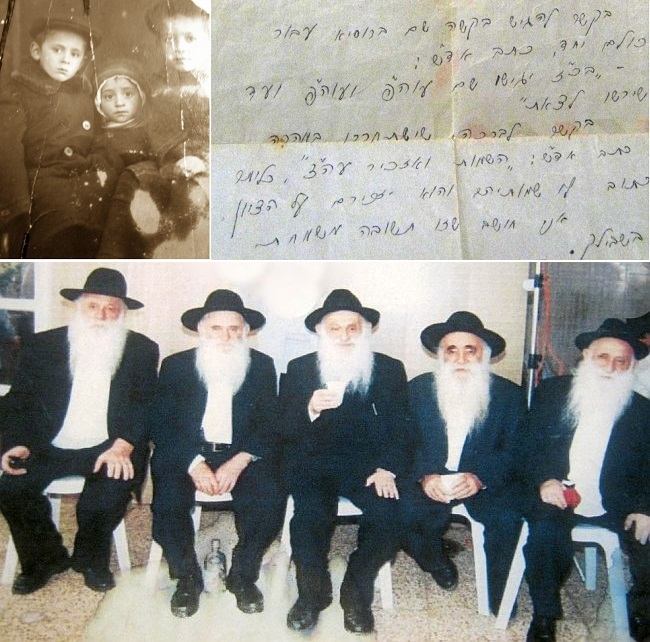

Raised in the Shadow of Lubyanka Prison
This past summer, we lost a special Chassid, R’ Yosef Lebenharz, who grew up in an apartment that faced the infamous Lubyanka, headquarters of the Moscow secret police. Farbrengens with the great Chassidim were hosted in his home, which is how R’ Yosef absorbed the Chassidic passion that was with him all his life.

“During the time that I was trying to get a visa to leave Russia, I went to Moscow and your parents opened their home to me. I slept in your house for many days. It was no simple thing because if the authorities would have discovered it, they would have sent me and your father to Siberia, but your father did it anyway.”
In a conversation I had with him a few years ago, R’ Yosef told about other Chassidim, friends of his father, who were regulars at his house, including: R’ Yankel Zuravitzer, R’ Mottel Gurary, R’ Chaim Eliezer Gurewitz, and R’ Moshe Dubrawsky.
There was an authentic Chassidic atmosphere in the Lebenharz home despite the visible presence of Lubyanka prison. It was the headquarters of the secret police in Moscow, where thousands of people were imprisoned over the years. In this building, they were interrogated at length under torture, and many of them died in its cellar without a fair trial.
Despite the numerous secret agents in the area, the Lebenharz family continued to host Chassidim. R’ Avrohom Shmuel was inspired by having learned under the Rebbe Rashab and Rebbe Rayatz and then bonding with the Rebbe. He instilled in his children his Chassidishe feelings and hiskashrus.
PARTNER IN FOUNDING ACHEI T’MIMIM TEL AVIV
An unexpected development occurred when under the reign of the tyrant Stalin, the family was given permission to leave. They immigrated to Eretz Yisroel. That was a dream for most people living behind the Iron Curtain in those days. The family lived among Chabad Chassidim in Tel Aviv and they felt like they were in heaven. They learned Torah in peace, davened in shul without fear, and kept Shabbos openly.
When they arrived in Eretz Yisroel, a Lubavitcher elementary school was opened in Tel Aviv called B’nei T’mimim. The Lebenharz boys learned there. The school was started by some Lubavitcher Chassidim who emigrated from Russia and settled in Tel Aviv and the surrounding area. About two years later a yeshiva was opened for older boys. Before it opened, a meeting was held at the Chabad shul on Montefiore Street. R’ Avrohom Shmuel attended this historic meeting, which took place on 17 Adar II 1938.
After living in Eretz Yisroel for a few years, where their child, Bella, was born, the family returned to Moscow. Of course, they were unaware of the bloodbath that would occur in Russia a few years later.
In Sivan 1941, the Germans invaded Russia. Like many other civilians, the Lebenharz family fled Moscow and traveled to distant Samarkand with their newborn baby, Mordechai. There was a famine in Samarkand at this time and the baby died of starvation.
Then R’ Avrohom Shmuel became sick and it was hard for him to support his family. The older sons, Zalman and Yosef, went to work to help support the household, while their younger brothers were sent to the underground Tomchei T’mimim. Despite the difficulties of that time, the two older brothers also devoted time to learning and occasionally attended farbrengens that the Chassidim in Samarkand held.
THE KGB ON THE TRAIL OF LEBENHARZ
When the war ended, the Lebenharz family returned to Moscow and then continued to Lvov in order to try and get out of Russia. While they were there, Chassidim suggested that R’ Avrohom Shmuel return to Moscow to sell his apartment in order to pay for the family’s travel expenses. The family went back to Moscow and the apartment was sold, but before they could return to the border city, they found out that the authorities were making mass arrests among the Chassidim in Lvov and that the opportunity to leave Russia had ended.
Moscow, Lvov, Moscow, selling an apartment and the plan to return to Lvov – this was all documented by the KGB. In recent years, KGB archives have shown reports by Agent Fuchs, who reported information about the Chassidim, including the Lebenharz family.
“Fuchs, 11/04/46” [Cheshvan 5707]
“The agent spoke with D who told him that Lebenharz, Avrohom Shmuel, who recently arrived from Lvov and is living in Piruvo Pala, plans on selling his home and traveling back to Lvov again with his family.”
From this bit of information we learn that the Lebenharz family was a subject of surveillance. Their position on observing Judaism and the ways of Chassidus was reason enough to keep them under surveillance.
Once the Lvov option was closed, they had to find another place to live. The moved to Chernowitz, also a border city, where they hoped to establish themselves somewhat. They had to work hard to make a living without desecrating Shabbos.
R’ Yosef married Chaya Golda Fettman. The couple moved to Frunze (today Bishkek) in Kyrgyzstan where it was easier to find work that wouldn’t require desecrating Shabbos. They chose this city because his brother Zalman already lived there, as did R’ Berel Yaffe with whom they consulted on Torah-Chassidic issues.
Later, R’ Yosef and his family moved to Tashkent where there was a large Chassidic community.
THE PROPHECY WAS FULFILLED
R’ Avrohom Shmuel and Etka Lebenharz had Zalman, Yosef, Moshe, Elimelech, Yona, and Bella. At a certain point, Zalman and his family immigrated to Eretz Yisroel, after which he worked hard to get the rest of his family out of Russia.
Mrs. Lebenharz sent a letter to her son in Eretz Yisroel which said, “The time has come to see one another again but you should know, we will not leave Russia without all the children.”
In those years, the Iron Curtain was firmly shut. Very few left the country. Nobody knew how this family dream to leave Russia would materialize.
R’ Zalman wanted to start by getting his parents out, but when he asked the Rebbe about this, he was told to send a request to Russian government to unify the family and to ask for exit visas for the entire family.
R’ Zalman worked intensively and spent large sums of money to get exit documents for his family as fast as possible. About two weeks after receiving the Rebbe’s answer, the requests were sent from Eretz Yisroel to Russia. The six Lebenharz families who were living in Tashkent, went together to the emigration office and told the clerk there that they wanted to leave for Eretz Yisroel to reunite their family. She asked in surprise, “You have one brother there and you all want to travel to him? Maybe do the opposite and have him come here. Anyway, why should you travel to that fascist country?”
The daring answer she was given shocked her. One of the brothers impudently said, “You must accept the requests and whatever they decide in Moscow, they’ll decide.” She remained silent and took the requests without saying a word.
Two months later they were sent a refusal. That meant they had to wait half a year before they could try again. R’ Zalman sent a request again to unite the family. Again, the Lebenharz families asked to leave and were refused again. At the same time, R’ Zalman continued to write to the Rebbe and list his siblings who wished to emigrate; Yosef ben Etka, Yona ben Etka, Elimelech ben Etka, Moshe ben Etka, Bella bas Etka.
Refusal followed refusal and the situation seemed hopeless. At one point, the family members asked R’ Zalman to ask the Rebbe if they should perhaps first ask for the parents, and only once the parents get out then they would ask for the rest of the siblings.
At the time, R’ Mordechai Goldberg from B’nei Brak was traveling to the Rebbe and R’ Zalman asked him to lay out the whole story for the Rebbe and to ask how to proceed. R’ Goldberg in fact received a clear answer from the Rebbe, which he recorded in writing, dated 23 MarCheshvan 5726:
“This morning, I sent in a note with all the details to the Rebbe Shlita, and in the afternoon received his holy response. As far as filing a request for the parents only and not together with the brothers, the Rebbe Shlita wrote: If so, it is not worth making a request in such a manner. Apparently, this was in response to the reasoning I wrote that if the father had to leave alone it might be harmful to his health. As far as putting in a request in Russia for all of them to leave together, the Rebbe wrote: Despite all, they should present a request again and again until they permit them to leave. As far as a bracha that they be freed quickly, the Rebbe wrote: The names and I will mention it at the tziyun. In other words, to send in the names and he will mention them at the tziyun.”
To R’ Mordechai Goldberg, there was no doubt as to what such clear answers from the Rebbe signified and he concludes his letter proffering his opinion, “I think this is a joyous answer for you.”
As the Rebbe foresaw, so did events unfold exactly. The families filed an emigration request and received a refusal, followed by another refusal, and on the third try there was a positive answer for the brother, R’ Yosef. He left Russia and arrived in Eretz Yisroel on 18 Teves 5766.
The miracle continued to unfold, and about a year and a half later, the entire family left one after the other. The Lebenharz family in its entirety merited to see the fulfillment of the Rebbe’s prophecy.
THE REBBE’S INVITATION
For Tishrei 5767, R’ Yosef traveled to the Rebbe together with a group of recent immigrants from Russia, who had all been invited by the Rebbe. The Rebbe even financed the cost of their airline tickets.
The group of new immigrants that the Rebbe invited merited many special kiruvim throughout the entire month. One of the honors was when they were instructed to all stand on the farbrengen platform near the Rebbe’s seat. At one of the farbrengens, the Rebbe said l’chaim to each one individually. When it came to R’ Yosef’s turn, the Rebbe said, “Let’s get to know Etka’s children.” Seemingly, this was because over the last few years R’ Zalman had written regularly to the Rebbe listing each of his brothers with the name of their mother, Etka.
R’ Yosef was one of those Chassidim who stayed out of the limelight. He followed in the ways of Chassidus in every detail, but did it all modestly without any “protrusions.” Even his hiskashrus to the Rebbe did not call attention to itself, aside from the fact that his grandchildren all knew that he would always travel to the Rebbe for Tishrei.
During his Shiva, his daughter, Mrs. Shoshana Dickstein, told the Beis Moshiach:
“From when Abba arrived in Eretz Yisroel, he traveled to the Rebbe for Tishrei almost every year, from the early 70’s through 1992 (except for 1975, when he sent my mother and me). When he was by the Rebbe, he was totally involved in the Rebbe. He participated in every event, t’fillos, farbrengens, kos shel bracha, and so on. He never missed out on a single t’filla with the Rebbe. He would also encourage his nephews, when they would come to the Rebbe, not to miss a single t’filla with the Rebbe.
“I remember an interesting episode from Sukkos 5739. This was a year after the health crisis that occurred on Simchas Torah 5738, so the Rebbe’s secretaries tried to do all in their power that the crowds not put any strain on the Rebbe. On Hoshana Raba, it was decided that at the time of the circling with the Hoshaanas, only the Rebbe and the chazan would walk around the bima. I stood in the women’s section watching everything. When it came to the final circuit, the Rebbe indicated that he wanted to go around with the entire congregation. Without waiting, the Rebbe joined the Chassidim and began to walk. Right in front of the Rebbe, Abba was walking, completely absorbed in his siddur and the liturgy of the Hoshaanas, without realizing that the Rebbe was walking right behind him for a few long minutes. When he finally realized, he immediately moved aside.”
A CHASSID AND A MAN OF CHESED
When he first arrived in Eretz Yisroel, he worked in diamond cutting at a concern in Tel Aviv. When, with the Rebbe’s encouragement, the Golgo-Tex textile company opened in Kiryat Malachi, he began to work there. Later, he became a partner in the company, which was owned and managed by his brothers, R’ Zalman and R’ Yona, R’ Mordechai Gorodetzky and R’ Moshe Goldschmidt.
He was a tremendously G-d fearing person. He was extremely careful about davening with a minyan and was a regular participant in the Torah classes in Nigleh and Chassidus in the Beis Menachem shul near his home, and even served as one of the gabbaim there. Many residents of Kfar Chabad recall how he would concern himself with organizing the farbrengens in shuls, and his late wife would prepare large salads and fresh fish for the participants. He would serve it all with a beaming face. There were also times when he would share his personal recollections of what he saw and heard from the Chassidim of yesteryear.
His family members knew that he walked around with a large amount of cash on him, but they never knew the reason. In a conversation with one of his friends, they discovered that their father felt that there should never be a situation where a fellow Jew needed his help on the spot, and he would not be able to provide that help readily and in cash. He was a modest man, internally and externally, punctilious in his mitzva observance without letting it be seen by anybody. Even his acts of kindness, which were an important part of his life, were done secretly and quietly.
Even when he was not in Kfar Chabad, he was careful to keep his study sessions in Nigleh and Chassidus, aside from the daily portions that everyone is meant to learn. He never wasted a moment. He was always busy, with work or davening and learning. Wherever he was, his lips were always moving as he recited verses of T’hillim.
When his health condition deteriorated and he had to be moved to a geriatric facility, his family members discovered evidence of his amazing acts of kindness, as his daughter Mrs. Dickstein recounts:
“We found in his home countless small notes, on which Abba wrote; gave this amount to so-and-so as a gift, another amount to such-and-such as a loan, and so on. It was only then that we began to realize to what extent Abba – who was not wealthy and worked hard for his livelihood his entire life – distributed and bequeathed monies wholeheartedly to Jews in need.”
***
He passed away on 7 Av and is survived by two daughters, Mrs. Shoshana Dickstein and Mrs. Mira Druk (who, together with their husbands, are on shlichus in Beer Sheva), as well as grandchildren and great-grandchildren who go in the path of Torah and Chassidus, many of whom are shluchim.
Berger. "Raised in the Shadow of Lubyanka Prison." Beis Moshiach, no. 1053 (January 18, 2017).